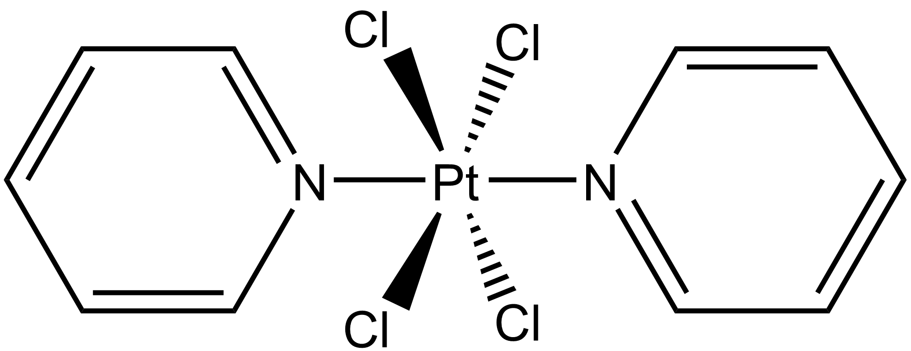
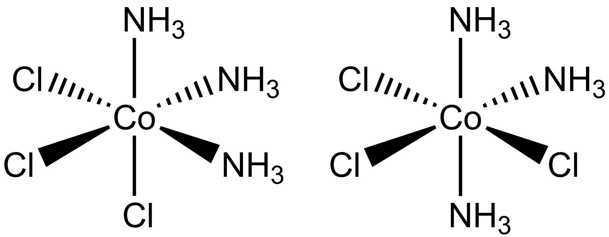

Pro vytvoření názvu komplexní sloučeniny musíme správně určit oxidační čísla centrálních atomů a názvy ligandů
Tato sloučenina má komplexní anion, jako kation vystupují tři draselné ionty. Náboj aniontu tedy bude 3−. Ligand CN nese jeden záporný náboj, takže oxidační číslo železa musí být III. Název sloučeniny je tedy hexakyanoželezitan draselný.
Ligand CO je neutrální (karbonyl, oxid uhelnatý), oxidační číslo železa tedy musí být 0.
Název sloučeniny je pentakarbonyl železa.
Sloučenina obsahuje komplexní anion i kation. Náboje obou částic musí být stejné. Ligand NH3 je neutrální a ligand Cl nese jeden záporný náboj. Oxidační čísla obou centrálních atomů budou tedy II.
Název sloučeniny je tetrachloroplatnatan tetraamminplatnatý.
Sloučenina obsahuje čtyři chloridové ligandy s nábojem 1− a dva pyridinové ligandy, které jsou neutrální. Náboj centrální platiny tedy musí být 4+. Ligandy seřadíme podle abecedy, u pyridinu musíme použít předponu bis.
Název sloučeniny je tetrachloro-bis(pyridin)platiničitý komplex.
Sloučenina obsahuje tři neutrální (NH3) a tři záporně nabité (Cl) ligandy. Oxidační číslo kobaltu je tedy III.
Název sloučeniny je triammin-trichlorokobaltitý komplex.
Pokud se podíváme na strukturu komplexu, zjistíme, že může vytvářet dva izomery. Levý komplex je fac-triammin-trichlorokobaltitý a pravý mer-triammin-trichlorokobaltitý.